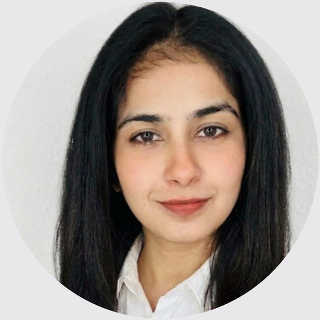

Research Associate, IIT Hyderabad
Farha'n Anjum, Ph.D.
Cell biology, chromatin organisation and microscopy.
I run the single-molecule and super-resolution imaging facility at IIT Hyderabad and study how chromatin and organelles change in cancer and cellular stress, one molecule at a time.

- Now
- Research Associate and facility in charge, DBT-SAHAJ National Facility for Single Molecule and Super Resolution Imaging, IIT Hyderabad
- Ph.D.
- IIT Mandi, 2024. Thesis evaluated with excellent remarks. Supervisor: Prof. Chayan Kanti Nandi
- M.Tech
- Biotechnology, MNNIT Allahabad, 2015, CGPA 8.7/10
- Based in
- Hyderabad, India
Left: two filaments as an ordinary microscope sees them, blurred by the diffraction limit. Right: the same structure rebuilt from single-molecule localisations. Each pink dot is one blinking fluorophore.
At a glance
24Publications
9First or co-first author
8Years of fluorescence microscopy
5Courses taught or organised
Research interests
Recent
- Invited instructor, Fundamentals of Microscopy and Image Analysis, National Institute of Animal Biotechnology, Hyderabad.
- Invited instructor, India BioImaging Western Chapter training course, IISER Pune.
- Invited instructor, India BioImaging North-East Chapter training course, IIT Guwahati.
- Organising committee member, SiMBio2026, international conference and workshop on single molecule biophysics, IIT Hyderabad.
- Indian patent 585894 granted: BSA-dye bioconjugate probe as a lysotracker.
- Chemical & Biomedical Imaging: chromatin reorganisation as a biomarker of anaesthetic effects in plants.
Let us work together
Imaging, chromatin biology, cancer cell biology or training. I am glad to talk.